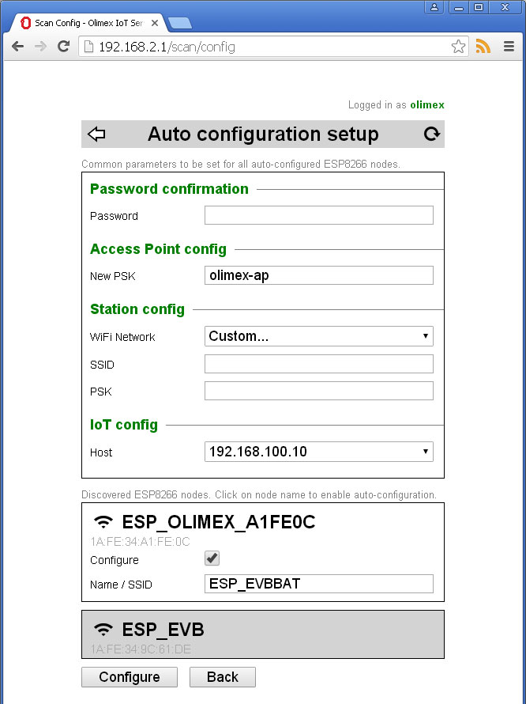

Back to OlimexIoT Help
This is option is available only if
Otherwise you have to use Manual node setup.
Connect and log on to your OlimexIoT server. If all of the above conditions are met you should see auto-setup icon . Click on it to enter the setup.
Setup will scan for ESP8266 access points and will display them bellow configuration parameters. If the access point SSID matches the default it will be selected for configuration. You can change default selection by clicking on the SSID of the access point.
If you have to configure more than one node from same type (e.g. three ESP8266-PLUGs) switch them on one by one so you can easily distinguish them.
If your node is not shown you can force new scan by clicking the refresh icon.
Password - confirm your OlimexIoT server password
New PSK - choose PSK for direct access to the configured nodes. The password should be at least 8 characters long.
WiFi Network - choose Access Point from dropdown list or select Custom... to enter it manually. This should be your existing WiFi network SSID and the configured nodes will attempt to connect to it.
PSK - enter PSK for selected WiFi access point.
Host - choose from the list or select Custom... to enter it manually. This is the name or IP address of your OlimexIoT server. Configured nodes will try to connect to it and report events.
Name / SSID - for each selected for configuration node you will be able to enter new Name / SSID. Choose descriptive name so you can easily distinguish different nodes.
When you are ready click on Configure button.
You should see something like this...
Continue with Node monitoring or Node management
Back to OlimexIoT Help